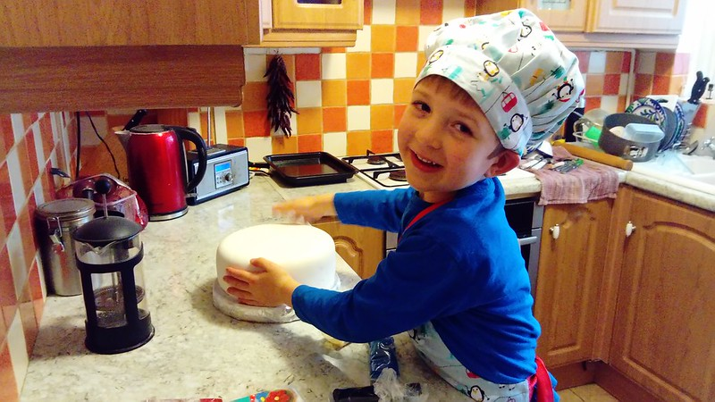
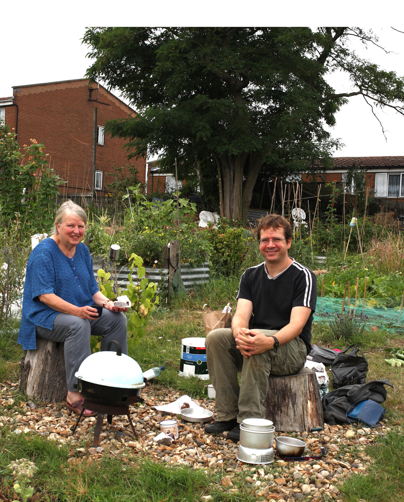

1
JJ’s Food Stories.
2
Some recipes from Maria and Gertrude:
2.1
Fried Fresh Fish (Tilapia) (Nsomba yo kazinga)
2.1.1
Ingredients:
2.1.2
Preparation:
2.2
Fresh Turnip Greens
2.2.1
Ingredients:
2.2.2
Cooking Instructions:
2.3
Bean Stew (Nyemba)
2.3.1
Ingredients:
2.3.2
Preparation:
2.4
Braai Chicken (Nkuku yo ocha)
2.4.1
Ingredients:
2.4.2
Preparation:
2.4.3
Cooking Instructions:
2.5
Kapenta
2.5.1
Preparation:
2.5.2
Cooking Instructions:
2.6
Vitumbuwa (Fritters)
2.6.1
Ingredients:
2.6.2
Cooking Instructions:
2.7
Nsima (Nshima)
2.7.1
Ingredients:
2.7.2
Preparation:
2.8
Goat Stew:
2.8.1
Ingredients:
2.8.2
Preparation:
3
A recipe from Candida!
3.1
PASTA E CECI
4
From Chela, Claire and Stanley
5
From Nick and Family:
6
From Pilar
7
From Isabel
8
From Simon
9
From Clare
10
From Alice
10.0.1
Mac and cheese
10.0.2
Fruit salad afternoons
10.0.3
7 course meal
10.0.4
Fartons in Ronda and Churros in Antequera
11
From Jenni
12
from Katy-Louise
13
From Susan and Alvar
13.0.1
Recipe for Alvars chicken curry
14
From Ana
15
From Rosie
16
from Kay
4
From Chela, Claire and Stanley
